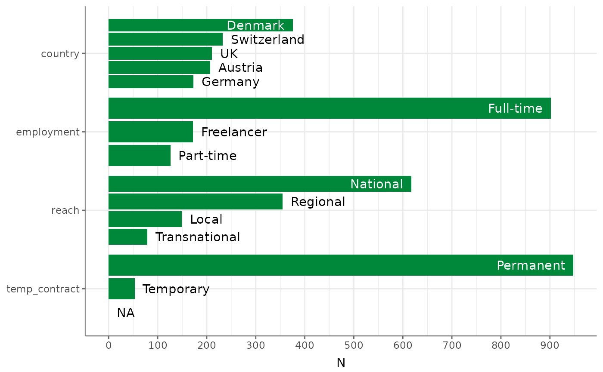
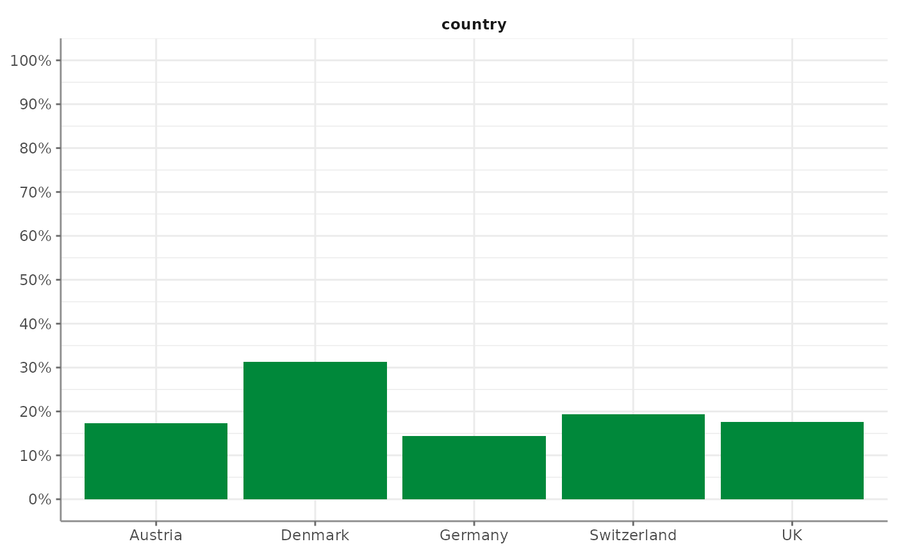

Univariate analysis of continuous and categorical variables
2025-08-28
Source:vignettes/v01_univariate.Rmd
v01_univariate.RmdThe first step in data exploration usually consists of univariate, descriptive analysis of all variables of interest. Tidycomm offers four basic functions to quickly output relevant statistics:
-
describe()for continuous variables -
tab_percentiles()for continuous variables -
describe_cat()for categorical variables -
tab_frequencies()for categorical variables
For demonstration purposes, we will use sample data from the Worlds of Journalism 2012-16 study included in tidycomm.
WoJ
#> # A tibble: 1,200 × 15
#> country reach employment temp_contract autonomy_selection autonomy_emphasis
#> <fct> <fct> <chr> <fct> <dbl> <dbl>
#> 1 Germany Nati… Full-time Permanent 5 4
#> 2 Germany Nati… Full-time Permanent 3 4
#> 3 Switzerl… Regi… Full-time Permanent 4 4
#> 4 Switzerl… Local Part-time Permanent 4 5
#> 5 Austria Nati… Part-time Permanent 4 4
#> 6 Switzerl… Local Freelancer NA 4 4
#> 7 Germany Local Full-time Permanent 4 4
#> 8 Denmark Nati… Full-time Permanent 3 3
#> 9 Switzerl… Local Full-time Permanent 5 5
#> 10 Denmark Nati… Full-time Permanent 2 4
#> # ℹ 1,190 more rows
#> # ℹ 9 more variables: ethics_1 <dbl>, ethics_2 <dbl>, ethics_3 <dbl>,
#> # ethics_4 <dbl>, work_experience <dbl>, trust_parliament <dbl>,
#> # trust_government <dbl>, trust_parties <dbl>, trust_politicians <dbl>Describe continuous variables
describe() outputs several measures of central tendency
and variability for all variables named in the function call:
WoJ %>%
describe(autonomy_selection, autonomy_emphasis, work_experience)
#> # A tibble: 3 × 15
#> Variable N Missing M SD Min Q25 Mdn Q75 Max Range
#> * <chr> <int> <int> <dbl> <dbl> <dbl> <dbl> <dbl> <dbl> <dbl> <dbl>
#> 1 autonomy_selec… 1197 3 3.88 0.803 1 4 4 4 5 4
#> 2 autonomy_empha… 1195 5 4.08 0.793 1 4 4 5 5 4
#> 3 work_experience 1187 13 17.8 10.9 1 8 17 25 53 52
#> # ℹ 4 more variables: CI_95_LL <dbl>, CI_95_UL <dbl>, Skewness <dbl>,
#> # Kurtosis <dbl>If no variables are passed to describe(), all numeric
variables in the data are described:
WoJ %>%
describe()
#> # A tibble: 11 × 15
#> Variable N Missing M SD Min Q25 Mdn Q75 Max Range
#> * <chr> <int> <int> <dbl> <dbl> <dbl> <dbl> <dbl> <dbl> <dbl> <dbl>
#> 1 autonomy_sele… 1197 3 3.88 0.803 1 4 4 4 5 4
#> 2 autonomy_emph… 1195 5 4.08 0.793 1 4 4 5 5 4
#> 3 ethics_1 1200 0 1.63 0.892 1 1 1 2 5 4
#> 4 ethics_2 1200 0 3.21 1.26 1 2 4 4 5 4
#> 5 ethics_3 1200 0 2.39 1.13 1 2 2 3 5 4
#> 6 ethics_4 1200 0 2.58 1.25 1 1.75 2 4 5 4
#> 7 work_experien… 1187 13 17.8 10.9 1 8 17 25 53 52
#> 8 trust_parliam… 1200 0 3.05 0.811 1 3 3 4 5 4
#> 9 trust_governm… 1200 0 2.82 0.854 1 2 3 3 5 4
#> 10 trust_parties 1200 0 2.42 0.736 1 2 2 3 4 3
#> 11 trust_politic… 1200 0 2.52 0.712 1 2 3 3 4 3
#> # ℹ 4 more variables: CI_95_LL <dbl>, CI_95_UL <dbl>, Skewness <dbl>,
#> # Kurtosis <dbl>Data can be grouped before describing:
WoJ %>%
dplyr::group_by(country) %>%
describe(autonomy_emphasis, autonomy_selection)
#> # A tibble: 10 × 16
#> # Groups: country [5]
#> country Variable N Missing M SD Min Q25 Mdn Q75 Max
#> * <fct> <chr> <int> <int> <dbl> <dbl> <dbl> <dbl> <dbl> <dbl> <dbl>
#> 1 Austria autonomy… 205 2 4.19 0.614 2 4 4 5 5
#> 2 Denmark autonomy… 375 1 3.90 0.856 1 4 4 4 5
#> 3 Germany autonomy… 172 1 4.34 0.818 1 4 5 5 5
#> 4 Switzerland autonomy… 233 0 4.07 0.694 1 4 4 4 5
#> 5 UK autonomy… 210 1 4.08 0.838 2 4 4 5 5
#> 6 Austria autonomy… 207 0 3.92 0.637 2 4 4 4 5
#> 7 Denmark autonomy… 376 0 3.76 0.892 1 3 4 4 5
#> 8 Germany autonomy… 172 1 3.97 0.881 1 3 4 5 5
#> 9 Switzerland autonomy… 233 0 3.92 0.628 1 4 4 4 5
#> 10 UK autonomy… 209 2 3.91 0.867 1 3 4 5 5
#> # ℹ 5 more variables: Range <dbl>, CI_95_LL <dbl>, CI_95_UL <dbl>,
#> # Skewness <dbl>, Kurtosis <dbl>The returning results from describe() can also be
visualized:

In addition, percentiles can easily be extracted from continuous variables:
WoJ %>%
tab_percentiles()
#> # A tibble: 11 × 11
#> Variable p10 p20 p30 p40 p50 p60 p70 p80 p90 p100
#> * <chr> <dbl> <dbl> <dbl> <dbl> <dbl> <dbl> <dbl> <dbl> <dbl> <dbl>
#> 1 autonomy_selecti… 3 3 4 4 4 4 4 4 5 5
#> 2 autonomy_emphasis 3 4 4 4 4 4 4 5 5 5
#> 3 ethics_1 1 1 1 1 1 2 2 2 3 5
#> 4 ethics_2 1 2 2 3 4 4 4 4 5 5
#> 5 ethics_3 1 1 2 2 2 2 3 4 4 5
#> 6 ethics_4 1 1 2 2 2 3 3 4 4 5
#> 7 work_experience 4 7 10 14 17 20 25 28 33 53
#> 8 trust_parliament 2 2 3 3 3 3 3 4 4 5
#> 9 trust_government 2 2 2 3 3 3 3 4 4 5
#> 10 trust_parties 1 2 2 2 2 3 3 3 3 4
#> 11 trust_politicians 2 2 2 2 3 3 3 3 3 4Percentiles can also be visualized:
WoJ %>%
tab_percentiles(trust_parties) %>%
visualize()
Describe categorical variables
describe_cat() outputs a short summary of categorical
variables (number of unique values, mode, N of mode) of all variables
named in the function call:
WoJ %>%
describe_cat(reach, employment, temp_contract)
#> # A tibble: 3 × 6
#> Variable N Missing Unique Mode Mode_N
#> * <chr> <int> <int> <dbl> <chr> <int>
#> 1 reach 1200 0 4 National 617
#> 2 employment 1200 0 3 Full-time 902
#> 3 temp_contract 1001 199 2 Permanent 948If no variables are passed to describe_cat(), all
categorical variables (i.e., character and
factor variables) in the data are described:
WoJ %>%
describe_cat()
#> # A tibble: 4 × 6
#> Variable N Missing Unique Mode Mode_N
#> * <chr> <int> <int> <dbl> <chr> <int>
#> 1 country 1200 0 5 Denmark 376
#> 2 reach 1200 0 4 National 617
#> 3 employment 1200 0 3 Full-time 902
#> 4 temp_contract 1001 199 2 Permanent 948Data can be grouped before describing:
WoJ %>%
dplyr::group_by(reach) %>%
describe_cat(country, employment)
#> # A tibble: 8 × 7
#> # Groups: reach [4]
#> reach Variable N Missing Unique Mode Mode_N
#> * <fct> <chr> <int> <int> <dbl> <chr> <int>
#> 1 Local country 149 0 5 Germany 47
#> 2 Regional country 355 0 5 Switzerland 90
#> 3 National country 617 0 5 Denmark 262
#> 4 Transnational country 79 0 4 UK 72
#> 5 Local employment 149 0 3 Full-time 111
#> 6 Regional employment 355 0 3 Full-time 287
#> 7 National employment 617 0 3 Full-time 438
#> 8 Transnational employment 79 0 3 Full-time 66Again, also the results from describe_cat() can be
visualized like so:
WoJ %>%
describe_cat() %>%
visualize()
Tabulate frequencies of categorical variables
tab_frequencies() outputs absolute and relative
frequencies of all unique values of one or more categorical
variables:
WoJ %>%
tab_frequencies(employment)
#> # A tibble: 3 × 5
#> employment n percent cum_n cum_percent
#> * <chr> <int> <dbl> <int> <dbl>
#> 1 Freelancer 172 0.143 172 0.143
#> 2 Full-time 902 0.752 1074 0.895
#> 3 Part-time 126 0.105 1200 1Passing more than one variable will compute relative frequencies based on all combinations of unique values:
WoJ %>%
tab_frequencies(employment, country)
#> # A tibble: 15 × 6
#> employment country n percent cum_n cum_percent
#> * <chr> <fct> <int> <dbl> <int> <dbl>
#> 1 Freelancer Austria 16 0.0133 16 0.0133
#> 2 Freelancer Denmark 85 0.0708 101 0.0842
#> 3 Freelancer Germany 29 0.0242 130 0.108
#> 4 Freelancer Switzerland 10 0.00833 140 0.117
#> 5 Freelancer UK 32 0.0267 172 0.143
#> 6 Full-time Austria 165 0.138 337 0.281
#> 7 Full-time Denmark 275 0.229 612 0.51
#> 8 Full-time Germany 139 0.116 751 0.626
#> 9 Full-time Switzerland 154 0.128 905 0.754
#> 10 Full-time UK 169 0.141 1074 0.895
#> 11 Part-time Austria 26 0.0217 1100 0.917
#> 12 Part-time Denmark 16 0.0133 1116 0.93
#> 13 Part-time Germany 5 0.00417 1121 0.934
#> 14 Part-time Switzerland 69 0.0575 1190 0.992
#> 15 Part-time UK 10 0.00833 1200 1You can also group your data before. This will lead to within-group relative frequencies:
WoJ %>%
dplyr::group_by(country) %>%
tab_frequencies(employment)
#> # A tibble: 15 × 6
#> # Groups: country [5]
#> employment country n percent cum_n cum_percent
#> * <chr> <fct> <int> <dbl> <int> <dbl>
#> 1 Freelancer Austria 16 0.0773 16 0.0773
#> 2 Full-time Austria 165 0.797 181 0.874
#> 3 Part-time Austria 26 0.126 207 1
#> 4 Freelancer Denmark 85 0.226 85 0.226
#> 5 Full-time Denmark 275 0.731 360 0.957
#> 6 Part-time Denmark 16 0.0426 376 1
#> 7 Freelancer Germany 29 0.168 29 0.168
#> 8 Full-time Germany 139 0.803 168 0.971
#> 9 Part-time Germany 5 0.0289 173 1
#> 10 Freelancer Switzerland 10 0.0429 10 0.0429
#> 11 Full-time Switzerland 154 0.661 164 0.704
#> 12 Part-time Switzerland 69 0.296 233 1
#> 13 Freelancer UK 32 0.152 32 0.152
#> 14 Full-time UK 169 0.801 201 0.953
#> 15 Part-time UK 10 0.0474 211 1(Compare the columns percent, cum_n and
cum_percent with the output above.)
And of course, also tab_frequencies() can easily be
visualized:
WoJ %>%
tab_frequencies(country) %>%
visualize()